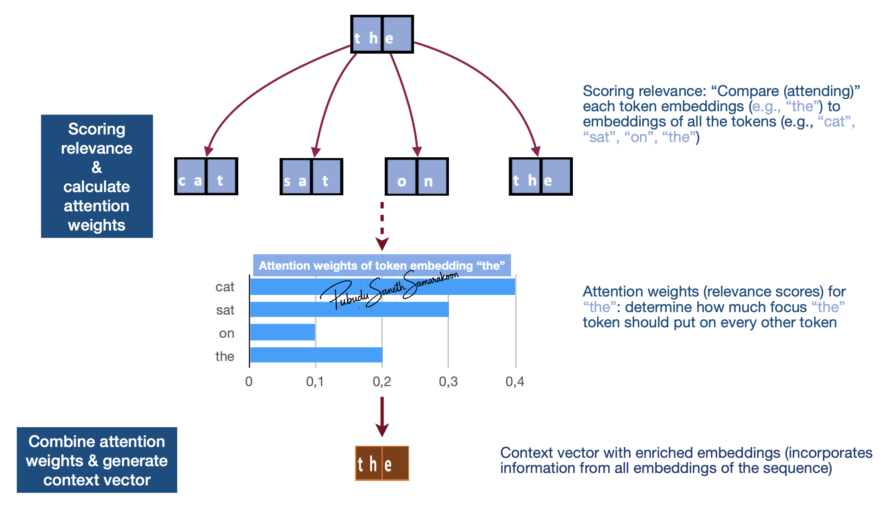

Self-attention mechanism
Objectives
Gain a basic understanding of:
Self-attention mechanism
How attention weights are calculated & context vector is generated?
What is self-attention mechanism?
Self-attention: create a new, enriched representation (context vector) by incorporating information from all token embeddings in the sequence
Two main steps mechanism:
Scoring relevance (“attending to”/”considering” all tokens) & calculate attention weights (relevance scores)
Combine attention weights and generate context vector (new enriched representation)
Context vector (enriched representation):
Captures the specific meaning of a token embeddings within its surrounding embeddings
Allow the model to understand relationships and dependencies between words, regardless of how far apart they are in the sentence

Self-attention with Q, K, V weight matrix
 Source (modified): transformer-explainer
Source (modified): transformer-explainer
\(𝑄\), \(𝐾\) and \(V\): matrices: Representation of input token embeddings
\(𝑄_{𝑚𝑎𝑡𝑟𝑖𝑥}\): Queries
Token representations that are used as queries in relevance scoring (embeddings that are used as queries for the “comparison”)
\(𝐾_{𝑚𝑎𝑡𝑟𝑖𝑥}\): Keys
Token representations that get compared to queries
\(V_{𝑚𝑎𝑡𝑟𝑖𝑥}\): Values
Token representations that are used to combine attention weights and generate context vector
Calculate attention weights
Attention weights: \(softmax(\frac{QK^T}{\sqrt{d_k}})\)
Main Stages
Stages 1: Dot product to calculate attention score (matrix manipulation: \({QK^T}\)):
Provides unscaled attention score (initial relevance scores) - A higher dot product means the two tokens are more aligned (similar context)
Indicates how aligned vectors in \(𝑄_{𝑚𝑎𝑡𝑟𝑖𝑥}\) with vectors in \(𝐾_{𝑚𝑎𝑡𝑟𝑖𝑥}\)
i.e., how much focus \(𝑄_{𝑚𝑎𝑡𝑟𝑖𝑥}\) vectors should put on \(𝐾_{𝑚𝑎𝑡𝑟𝑖𝑥}\) vectors
Matrix manipulation enables simultaneously compare all the vectors in \(𝑄_{𝑚𝑎𝑡𝑟𝑖𝑥}\) to \(𝐾_{𝑚𝑎𝑡𝑟𝑖𝑥}\)
Stage 2: Scaling: Scaled attention score
Help avoid high-values in attention score and stabilize gradients
Stage 3: Calculate “Attention weights”
Apply
softmaxfunction to scaled attention scores and calculate “Attention weights”softmaxfunction makes values to be positive and sums up 1 (convert to probabilities)i.e., Convert attention scores to attention weights (probabilities) what shows “relative importance” \(𝑄_{𝑚𝑎𝑡𝑟𝑖𝑥}\) vectors put on \(𝐾_{𝑚𝑎𝑡𝑟𝑖𝑥}\) vectors

Generate context vector
Multiply these attention weights by the Value vectors (\(V_{𝑚𝑎𝑡𝑟𝑖𝑥}\)) and produce final context vector

\(𝑊_{𝑡ℎ𝑒}\): To what extent token “the” attend to (focus on) each input token (attention weights)
\(𝑉_{𝑚𝑎𝑡𝑟𝑖𝑥}\): Representation of input token embedding matrix